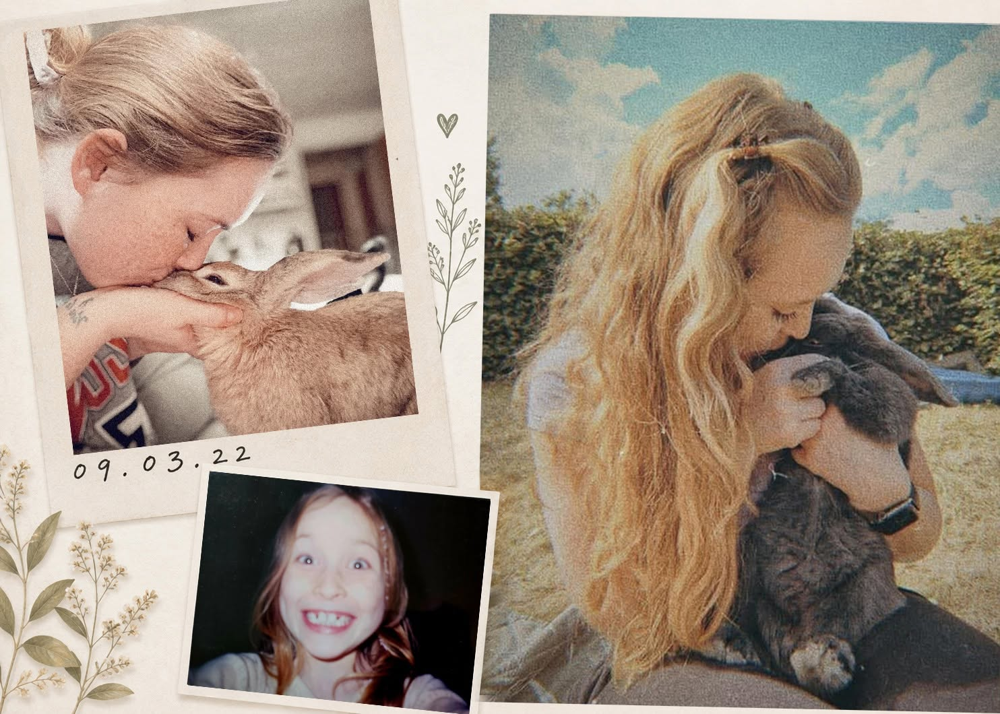

Hvem står bag Kaninologi?
Jeg hedder Isabella Gundager, og min historie med kaniner begyndte for mere end 25 år siden, da jeg fik min første kanin, Nanna. Hun boede, som mange kaniner gjorde dengang, i et bur i haven. Senere kom flere kaniner til, og kaniner har på den ene eller anden måde været en del af mit liv lige siden.

Da jeg blev voksen og selv fik det fulde ansvar for mine kaniner, begyndte jeg for alvor at stille spørgsmålstegn ved meget af det, jeg havde lært om at holde kanin. Hvor meget plads har de egentlig brug for? Hvad bør de spise? Hvordan fungerer deres adfærd, og hvad skal der egentlig til for at give dem et godt kaninliv?
De spørgsmål blev starten på mange års research og nørderi. Jo mere jeg lærte, jo flere spørgsmål fik jeg, og min måde at holde og forstå kaniner på ændrede sig undervejs. Den nysgerrighed er en stor del af grunden til, at Kaninologi findes i dag.
Min faglige baggrund
Til daglig har jeg en sundhedsfaglig baggrund som uddannet sygeplejerske. Det er selvfølgelig ikke det samme som at have en veterinærfaglig uddannelse, men det har givet mig en faglig ballast inden for blandt andet anatomi, fysiologi, kildekritik og formidling. Den tager jeg med mig, når jeg dykker ned i litteraturen og forsøger at gøre kompliceret viden om kaniner forståelig og anvendelig i hverdagen.
Kaninologi erstatter selvfølgelig ikke veterinærfaglig rådgivning. Er en kanin syg, bør den tilses af en kaninerfaren dyrlæge.
Hvorfor Kaninologi?
Kaninologi bliver et sted for guides, planter, kaninnørderi og den viden, jeg ville ønske, mine forældre havde haft adgang til, da jeg fik min første kanin for mere end 25 år siden.
Meget har ændret sig siden dengang, og heldigvis ved vi langt mere om kaniners behov i dag. Den viden vil jeg gerne være med til at gøre lettere at finde og forstå.